| 2-D searching Tutorial |
|---|
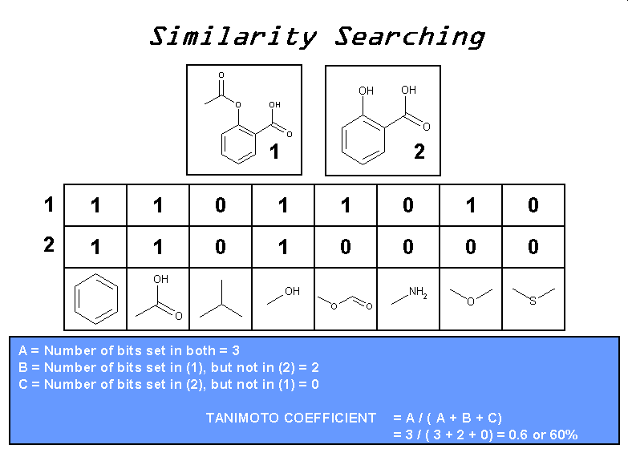
Below you will find two new compounds. Calculate the Tanimoto coefficient for this pair of molecules.
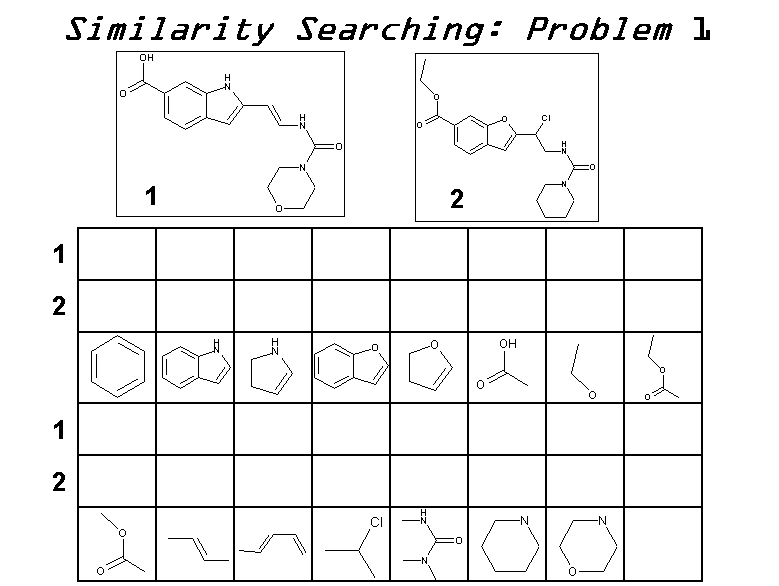
Below you will find two known active compounds for the estrogen receptor; Raloxifene(1) and Tamoxifen(2). Calculate the Tanimoto coefficient for this pair of molecules. Are these two compounds very similar ?
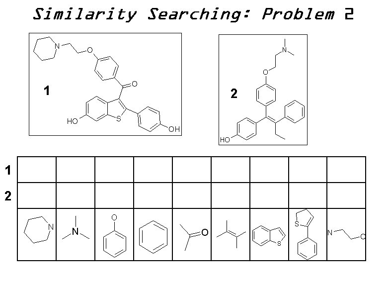
From the Unix shell (command prompt):
Read in the database of 500 compounds:
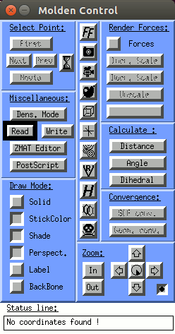 | 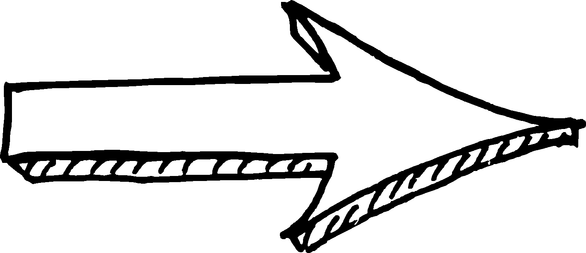 | 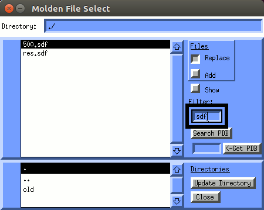 |
Next we have to calculate fingerprints for the molecules in the database:
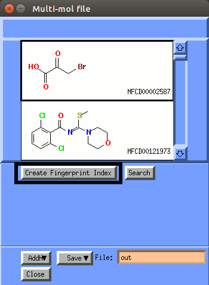 | 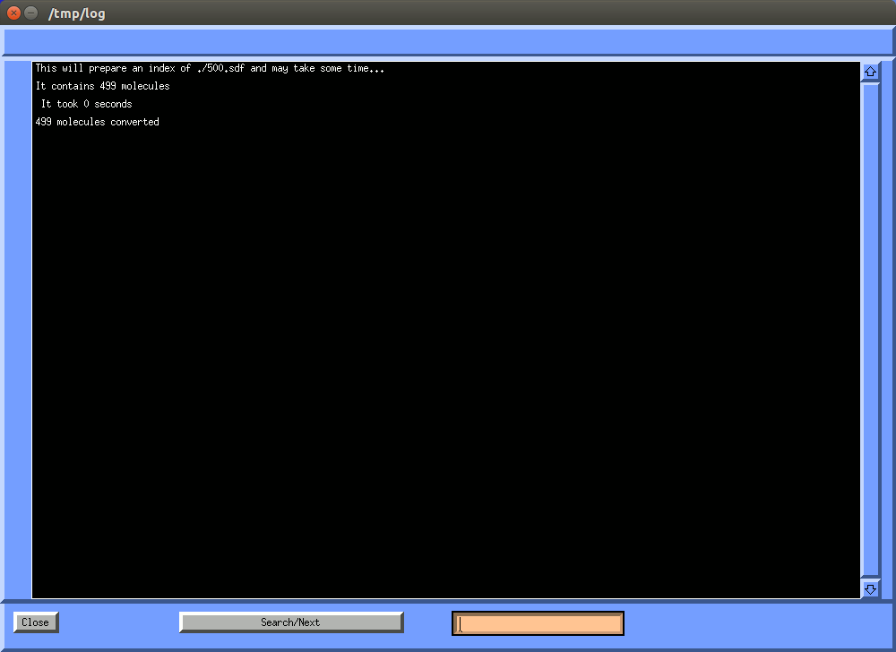 |
Now close this window
and let's do the 2D similarity search:
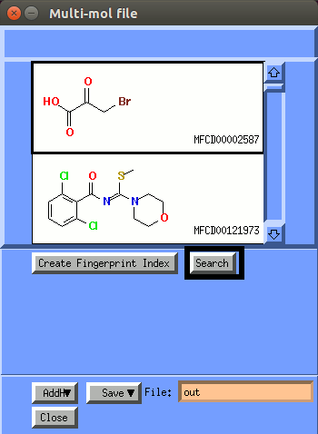 | 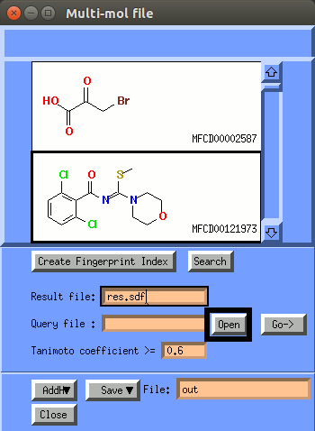 |
Open the Query file: tamoxifen.mol2
and set the overlap (Similarity) to 0.75:
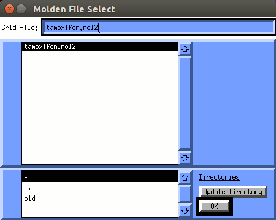 | 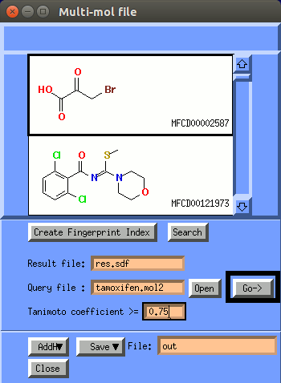 |
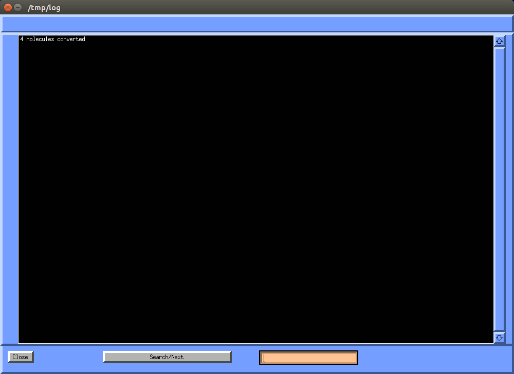 |
Now close this search results window.
The results of the search have been written in the res.sdf file.
Now let us open this file and look at the results.
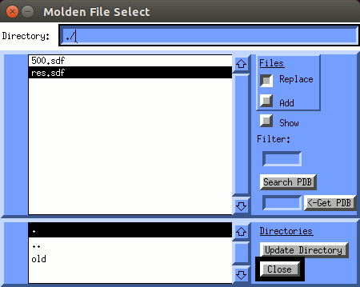 |
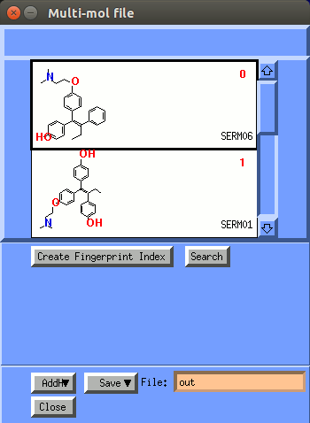 |
To navigate through the database use the Up and Down arrow keys.
To view a hit left click the compound icon field and click OK.
You will 4 serms as hits.
If you repeat the same procedure with Overlap set to 48. You will find almost all of the known drugs in the database (14) and twelve false positives. In this case the optimal similarity cutoff is apparently 48.